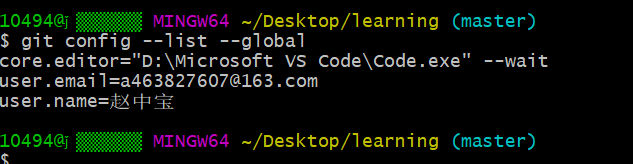
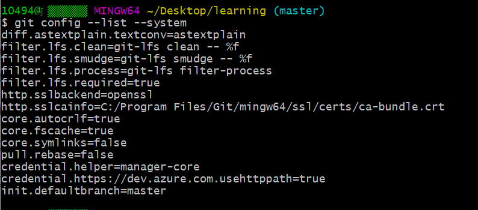
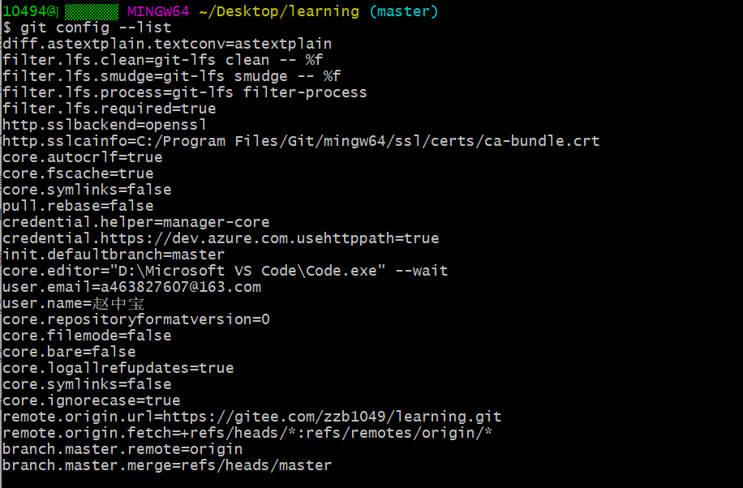
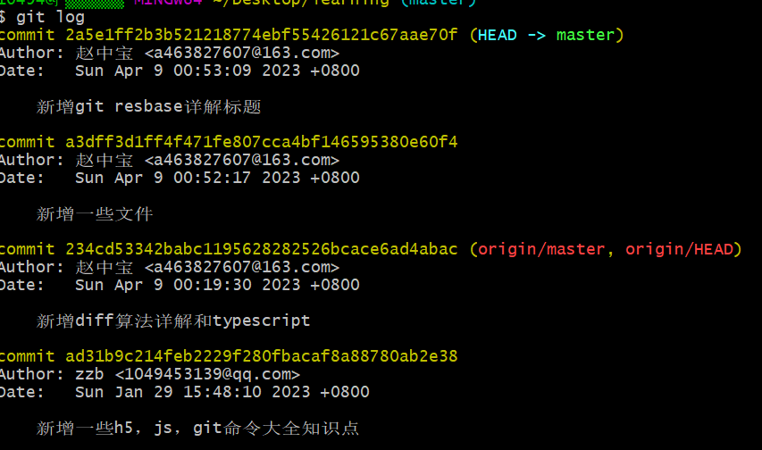
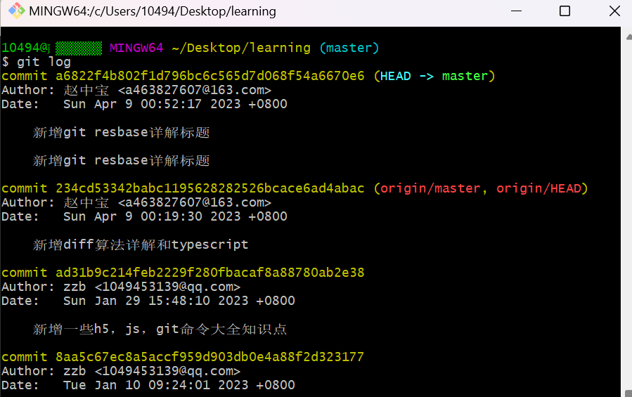
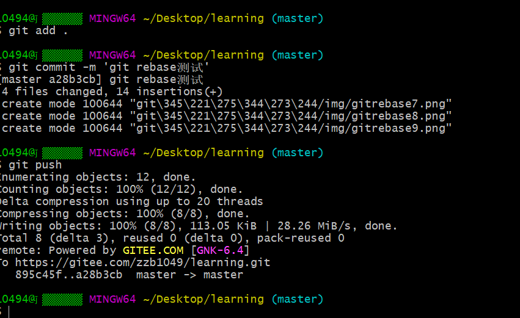
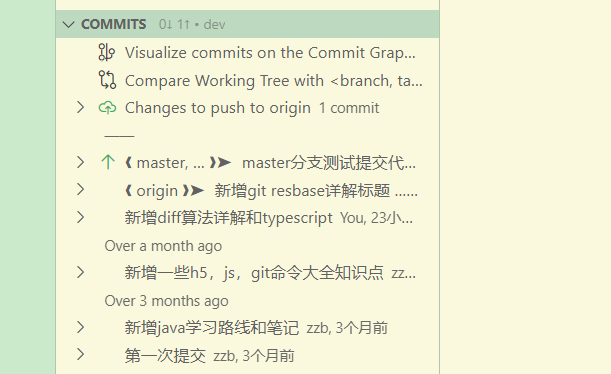
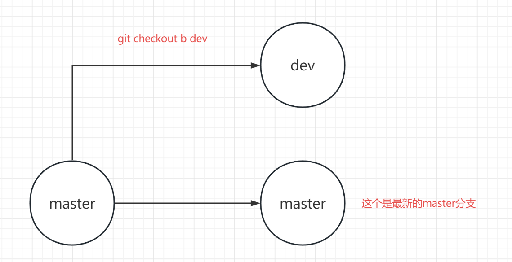
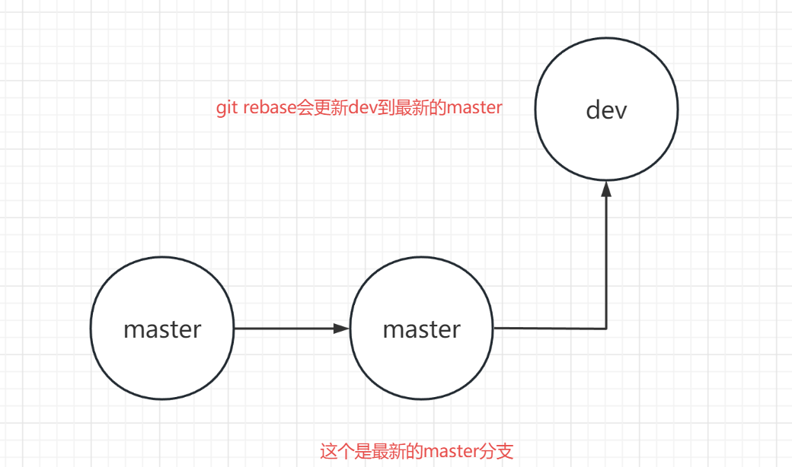

git命令操作大全
检查git版本
git --version
查看git相关命令
git --help
查看当前的git配置信息
git config --list
查看git用户名
git config user.name
-查询⽬前git所使⽤的使⽤者名称
git config --global user.name 名称
注： --global 表示全局， 没有--global表示只设置在当前项目中的配置
查看git邮箱
git config user.email
-查询git所使⽤的email
git config --global user.email
设置 （配置）全局邮箱
git config --global user.email "eamil@qq.com"
全局配置用户名(设置git使⽤者名称)
git config --global user.name "username"
git对项目中的代码进行管理
初始化git储存
git init
需要提交的所有修改放到暂存区（Stage）
git add * //将工作区所有修改添加到暂存区
git add . //将工作区所有修改添加到暂存区
git add <file-name> //将指定文件添加到暂存区
git add *.js //提交所有.js格式文件
git add -f <file-name> // 强制添加 指定文件添加到暂存区
注：<file-name>指的是文件的名称
恢复（后悔药）
将暂存区的文件恢复到工作区
git reset <file-name> //从暂存区恢复指定到工作区
git reset -- . //从暂存区恢复所有文件到工作区
git reset --hard // 把暂存区的修改退回到工作区
查看工作区、暂存区的状态
git status
移除暂存区的修改
git rm --cached <file-name> //将本地暂存区的内容移除暂存区
将缓存区的文件，提交到本地仓库（版本库 ）
git commit <file-name> ... "相关的记录信息" //将缓存区的指定文件提交到本地仓库
git commit -m "相关的记录信息" //将缓存区的所有文件提交到本地仓库
git commit -am '相关的记录信息' //跳过暂存区域直接提交更新并且添加备注的记录信息
git commit --amend '相关的记录信息' //使用一次新的commit，替代上一次提交，如果代码没有任何新变化，则用来修改上一次commit的提交记录信息
撤销commit提交
git revert HEAD //撤销最近的一个提交(创建了一个撤销上次提交(HEAD)的新提交)
git reset --soft HEAD^
注意：Windows系统需要在^符号后面两边加上引号，如：
git reset --soft HEAD"^"
git revert HEAD^ //撤销上上次的提交
查看日志
查看历史提交(commit)记录
git log //查看历史commit记录
注：空格向下翻页，b向上翻页，q退出
git log --oneline //以简洁的一行显示，包含简洁哈希索引值
git log --pretty=oneline //查看日志且并且显示版本
git log --stat //显示每个commit中哪些文件被修改,分别添加或删除了多少行
查看分支合并图
git log --graph
查看版本线图
git log --oneline --graph
git版本控制（时光机）
回到指定哈希值对应的版本
git reset --hard <Hash> // 回滚到需要的版本 (回滚了仓库,暂存区,暂存区,工作区)
注:<Hash> 是版本的哈希值
git reset --hard HEAD //强制工作区、暂存区、本地库为当前HEAD指针所在的版本
版本回退
git reset --hard HEAD~1 //后退一个版本
注：~后面的数字表示回退多少个版本
其他版本回退
git reset --mixed <Hash> // 回滚到需要的版本 (回滚了仓库,暂存区)
git reset --soft <Hash> // 回退到需要的版本 （只回滚到本地仓库）
分支
查看分支
git branch //查看所有本地分支
git branch -r //查看所有远程分支
git branch -a //查看所有远程分支和本地分支
git branch --merged //查看已经合并的分支
创建分支（依然停留在当前的分支）
git branch <branch-name>
注: <branch-name> 是分支的名称
切换分支
git checKout <branch-name> //切换到指定分支，并更新工作区
git checkout - //切换到上一个分支
创建并切换分支（创建一个新的分支，并切换到这个新建的分支上）
git checkout -b <branch-name>
合并分支（合并某一个分支到当前分支）
git merge <branch-name>
删除分支
git branch -d <branch-name> //只能删除已经被当前分支合并的分支
git branch -D <>branch-name> //强制删除分支
删除远程分支
git push origin --delete <remote-branch-name>
注：<remote-branch-name> 远程分支名
git修改本地分支名和远程分支名
远程仓库（团队协作）
克隆远程仓库（从远程仓库拉取代码）
git clone <url>
注：<url> 远程仓库的地址
本地库与远程库进行关联
git remote add origin <url>
注：<url> 远程仓库的地址
查看远程仓库地址别名
git remote -v
新建远程仓库地址别名
git remote add <alias> <url>
注:<alias> 远程仓库的别名
<url> 远程仓库的地址
删除本地仓库中的远程仓库别名
git remote rm <alias>
注:<alias> 远程仓库的别名
复制代码
重命名远程仓库地址别名
git remote rename <old-alias> <new-alias>
注：<old-alias> 旧的远程仓库
<new-alias> 新的远程仓库
把远程库的修改拉取到本地
git fetch <alias/url> <remote-branch-name> //抓取远程仓库的指定分支到本地，但没有合并
git merge <alias-branch-name> //将抓取下来的远程的分支，跟当前所在分支进行合并
git pull <alias/url> <remote-branch-name> //拉取到本地，并且与当前所在的分支进行合并
注:<alias/url> 远程仓库的别名 或者是 远程仓库地址
<remote-branch-name> 远程分支名
将本地的分支推送到远程仓库
提示！：在推送前要先拉取哦 git pull
git push <alias/url> <branch-name> //将本地的每个分支推送到远程仓库
git push <alias/url> --force //强行推送 当前分支到远程仓库，即使有冲突
git push <alias/url> --all //推送所有本地分支到远程仓库
注:<alias/url> 远程仓库的别名 或者是 远程仓库地址
<branch-name> 本地分支名
查看配置信息
查看全局配置信息
git config --list --global

查看本地仓库配置信息
git config --list --local

查看系统配置信息
git config --list --system

查看所有配置信息
git config --list

git rebase详解
第一个作用：合并commit提交
一般情况下，我们进行开发时，都是从master分支拉一个自己的开发分支，进行代码修改操作，再git add以及git commit之后将我们修改好的代码git push到远程仓库。
但是，很多情况下，我们并不会仅仅在本地git commit一次，而是会执行很多次，而我们知道，每一个的git commit都会形成一个git节点，而如果我们把这些节点都push到远端，就会使项目的git日志很乱，因为你的这些commit对于其他同学来说都仅仅是为了完成你对应的修改工作，他们希望的是，你能在一次commit操作中把你的修改全部完成，这时，就可以用到我们的git rebase操作了，在git push之前，我们可以将几次本地的commit操作合并，这样，我们推送到远端的commit操作就只有一个了，更利于项目管理。
rebase为变基，git rebase -i 命令可以压缩合并多次提交，执行git rebase i hash就可以进行变基。

则会根据你设置的git默认编辑器打开我们需要修改的地方，我这里默认是vim，你也可以设置成其他

这个是里面的提示：
- pick：保留该commit（缩写:p）
- reword：保留该commit，但我需要修改该commit的注释（缩写:r）
- edit：保留该commit, 但我要停下来修改该提交(不仅仅修改注释)（缩写:e）
- squash：将该commit和前一个commit合并（缩写:s）用的比较多
- fixup：将该commit和前一个commit合并，但我不要保留该提交的注释信息（缩写:f）
- exec：执行shell命令（缩写:x）
- drop：我要丢弃该commit（缩写:d）
根据自己的需要修改commit信息


我这里修改了commit信息，想着是合并的，但是前面没有截图，是向把最近两条commit信息合并为一条的。进入了vim直接进行编辑修改commit信息，修改完成后保存退出，就会出现如下信息。

出现如下信息代表修改成功，我们git log查看是否成功

修改成功，以前我们本地原本有两条commit信息，如果push到远端就是两条commit提交记录，修改后，push到远端，只会显示一条，这个是git rebase的第一个作用。
第二个作用：合并分支
我们在日常开发中已经知道了git merge 分支名可以合并代码，为什么我们还要使用git rebase 分支名合并代码呢？这两者肯定是有所不同的，接下来我们就来探讨一下两者的不同点。
首先我们在master分支上修改了代码，然后使用git status查看我们是否修改了

证明我们修改了master分支的代码，然后我们提交并push到远程。

我们知道，我们现在master分支的代码是最新的，但是我们dev分支的代码还不是最新的，因此我们需要把dev分支的代码更新到最新状态，如果dev分支的代码有所改动，我们可以使用git stash先存在git栈中，然后使用git merge master合并master分支的代码到dev分支。

合并完成后，我们发现在dev分支多了一条合并master分支的代码到dev分支的git记录，有所区别的地方就在这里了，git rebase 分支名就不会出现这一条合并的记录。
其他理解：我们先从 master 分支切出一个 dev 分支，进行开发：

其他同学完成了一次 hotfix，并合并入了 master 分支，此时 master 已经领先于你的 dev分支了：

使用 rebase 来同步其他同学修改的结果，来保证自己的代码是最新的版本

git rebase 做了什么操作呢？
首先，git 会把 dev 分支里面的每个 commit 取消掉；
其次，把上面的操作临时保存成 patch 文件，存在 .git/rebase 目录下；
然后，把 dev 分支更新到最新的 master 分支；
最后，把上面保存的 patch 文件应用到 dev 分支上。
在 rebase 的过程中，也许会出现冲突 conflict。在这种情况，git 会停止 rebase 并会让你去解决冲突。在解决完冲突后，用 git add 命令去更新这些内容。注意，你无需执行 git commit-m 'xxx'，只要执行 git rebase continue
这样 git 会继续应用余下的 patch 补丁文件。在任何时候，我们都可以用 --abort 参数来终止 rebase 的行动，并且分支会回到 rebase 开始前的状态。
根据上文来看，
git-rebase很完美，解决了我们的两个问题： 1.合并commit记录，保持分支整洁； 2.相比merge来说会减少分支合并的记录；缺点就是：
- 如果你的分支不只有你在进行开发，那么
git-rebase可能会导致提交记录的丢失。
git仓库中添加子仓库
如果你在你的携带git仓库的目录下，有子git仓库，那么你执行git add .的时候，会出现“You've added another git repository inside your current repository."的报错。
可以这么处理：
首先，建议你的远程仓库的命名跟子仓库相同，这样不会有两个仓库存在，或许你可以配置.gitignore去解决这个问题，但是不建议这么做，会比较繁琐。
-
添加子仓库地址
git submodule add 你的子仓库的地址 # 也就是上面所说，如果的你子仓库命名和本地目录下的不一样，就会克隆一个项目下来，多了一层结构，如果相同如果出现
xxx already exists in the index提示，请使用如下命令，清除缓存：git rm -r --cached 文件名 -
到父级仓库进行提交即可
git add . git commit -m "xxx"
注意，成功后你得父级会生成.gitmodules文件
[submodule "jira-project"]
path = jira-project
url = https://gitee.com/zzb1049/jira-project.git
[submodule "Rudex/redux-learning"]
path = Rudex/redux-learning
url = https://gitee.com/zzb1049/redux-learning.git
[submodule "React/react-pratice"]
path = React/react-pratice
url = https://gitee.com/zzb1049/react-pratice.git